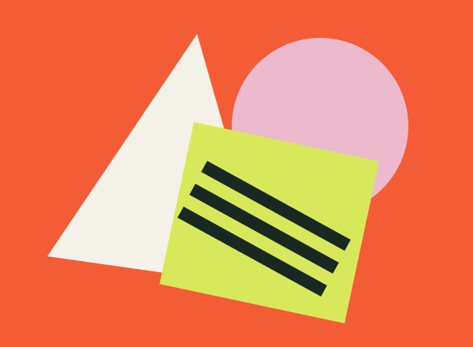
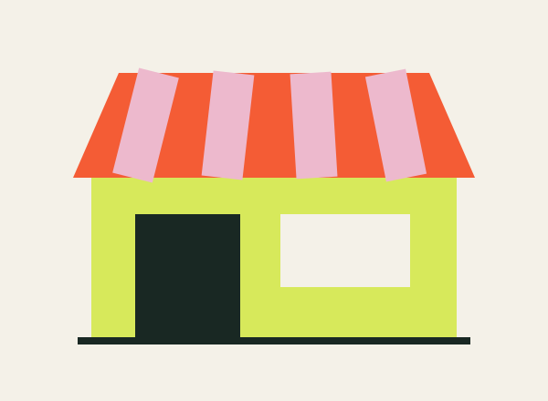
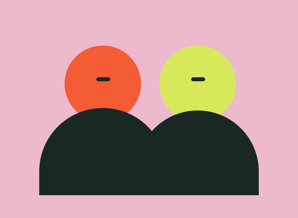

Workshop / Nadia Tan
Make your mark.
Ink, paper and a little happy accident. Create a two-colour print to take home.
The programme / 20 March 2027
Get your hands inky, open your mind or find your next favourite sound. There’s no wrong place to start.
6 sessions to explore
Workshop / Nadia Tan
Ink, paper and a little happy accident. Create a two-colour print to take home.

Talk / Amir Rahman
An honest conversation about finding your voice and making work that matters.

Live music / The Sunday Club
Ease into the afternoon with warm rhythms, local sounds and good company.

Workshop / Mei Studio
Turn everyday scraps into something unexpected. Materials and curiosity welcome.

Talk / Jo Lim
Meet an independent maker and explore the journey from first sketch to first collection.

Listening session / Ruang Radio
A shared playlist for a shared space. Discover a new track and meet someone new.
All hosts, sessions, times and places are invented for this worked example. No real reservations are available.
Bring a friend. Leave with an idea.